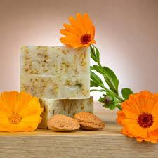
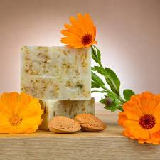

Galería

Ilustrativo javón lavanda
Ilustrativo javón canendula
EcoSoap, tu opción en productos de higiene 100% naturales y respetuosos con el planeta.
Explora Nuestros ProductosEcoSoap nace de la pasión por la producción de jabones 100% naturales y respetuosos con el planeta. Cada producto que creamos refleja nuestro compromiso con el bienestar, tanto de nuestros clientes como del entorno.
Producir jabones artesanales de alta calidad que cuiden la piel y el medio ambiente, promoviendo un estilo de vida sostenible y responsable.
Ser líderes en el mercado de productos de higiene natural, reconocidos por nuestro compromiso con la naturaleza y la satisfacción de nuestros clientes.
Desde el cultivo de las plantas aromáticas y medicinales al diseño y corte, nuestros jabones artesanales siguen un minucioso proceso de elaboración. Os lo explicamos paso a paso.
Nuestros jabones artesanales destacan por sus propiedades y por la calidad de sus ingredientes, pero también por la minuciosidad con la que son elaborados.
Entre sus propiedades más destacadas figuran:
Fases de elaboración:
En nuestra finca, cultivamos plantas como lavanda, romero y caléndula de forma ecológica.
Las plantas se secan y almacenan para conservar sus propiedades, y se utilizan en macerados de aceite de oliva virgen extra.
En nuestro obrador, mezclamos los aceites y el álcali para obtener un jabón de alta calidad.
El jabón se vierte en moldes de madera y se corta manualmente con una cuerda de guitarra, logrando piezas únicas.
Los jabones pasan por un proceso de curación de al menos un mes para garantizar su calidad.
Todos nuestros jabones son enviados a un laboratorio para garantizar que cumplen los requisitos de calidad.
La elaboración de nuestros jabones es totalmente artesanal, lo que hace que cada pieza sea única. Consulta nuestro catálogo completo de jabones.
"Los jabones de EcoSoap han transformado mi piel. Son suaves y realmente efectivos. ¡Me encanta su aroma natural!"
- María G.
"Desde que probé el jabón de lavanda, no he vuelto a usar otros productos. EcoSoap es la mejor opción para el cuidado de la piel."
- Carlos R.
Ilustrativo javón lavanda
Ilustrativo javón canendula
La duración depende del uso y almacenamiento, pero en promedio cada jabón puede durar entre 3 y 4 semanas con un uso regular.
Sí, nuestros jabones están formulados para ser suaves y aptos para todo tipo de piel, incluyendo piel sensible.
Sí, realizamos envíos a toda Colombia. Puedes consultar los costos de envío durante el proceso de compra.
Sí, todos nuestros productos están elaborados con ingredientes naturales y sostenibles, además de empaques biodegradables.